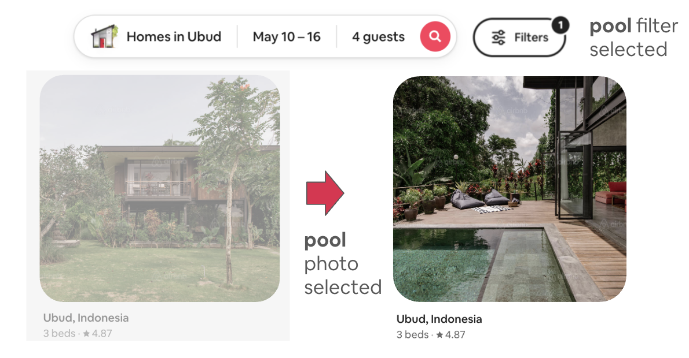
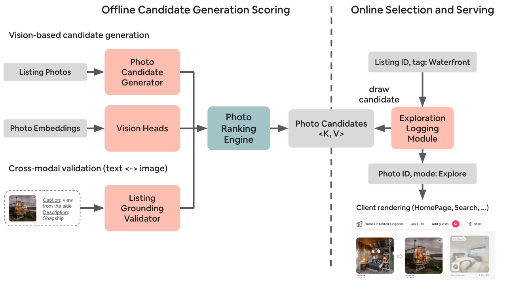
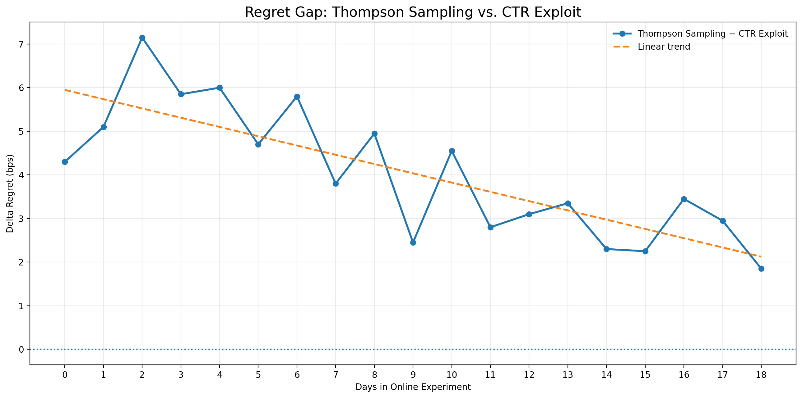
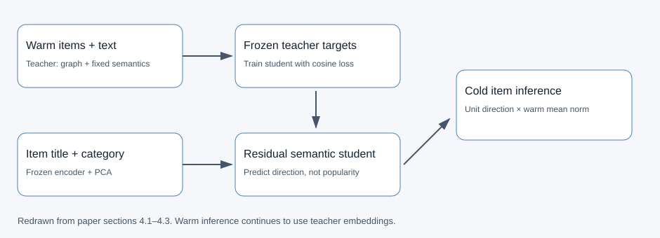
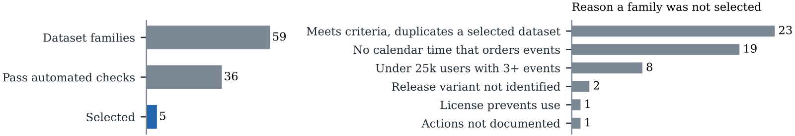

目录 · 8 节
1同一个模型在搜索页：按筛选换封面涨了预订，不看筛选没涨2一张照片当上封面要走六步3没人点过的照片靠五种替代信号进候选4最吸引人的照片要先过合规和真实性两关5CTR 模型学的是两张照片谁的点击率更高6客人勾了「泳池」时，只有泳池照片能被选上7为什么线上留 10% 随机，却不用 Thompson Sampling8OptiCover 还没做到的两件事Airbnb 自动换封面这件事，想多拿预订，管住「哪些照片能当封面、客人搜什么时才换」，比把点击率再推高更有用。
Airbnb 上一套房源通常有几十张照片，房东要手动选一张当封面。这张封面会出现在首页、搜索结果页等所有地方，客人搜什么都不变。下面用一个贯穿全文的例子（示意）：一套湖边木屋有 12 张照片，房东选了客厅沙发当封面，另外还拍了后院泳池、卧室和步行 5 分钟外的一家小酒馆。客人在搜索页勾了「泳池」筛选，看到这套木屋时，封面上仍然是沙发，泳池要点进详情页才看得到。

让机器替房东选封面，第一个难处是没有数据。Airbnb 超过 90% 的房源照片从没当过封面，也就没有封面点击记录，每天还会新增几十万张照片。放到木屋上，12 张照片里只有现在的沙发和去年当过封面的卧室有点击记录，其余 10 张从没被客人点过（示意）。第二个难处是点击高的照片不一定能用。小酒馆那张可能最吸引人，可客人到了现场发现酒馆不在房子里，这次入住的体验就坏了。第三个难处是同一张照片在不同场合的价值不一样：沙发放在首页也许够用，却回答不了勾了「泳池」的客人最想确认的事：这里的泳池长什么样。
已有做法卡在拿不到干净的数据上。第一种做法用 logistic regression 拟合历史 CTR（点击率），把能观测到的因素放进协变量。木屋的沙发封面点击率高，也许只是因为房东回复快、口碑好，这些没观测到的因素都会算到照片头上（示意）。第二种做法看房东自己换封面前后的变化，可房东常常同时改价格或描述。假如木屋七月把封面换成泳池、同时降价，点击涨了也分不清是照片的功劳、降价的功劳，还是暑假到了（示意）。Thompson Sampling 这类在线方法能边试边学，但那 10 张照片要一张张攒够曝光，试的过程中小酒馆那张也可能被选上。
OptiCover 是 Airbnb 已经上线的封面选择系统，作者称它每天替换几千万次封面。它先用几种点击之外的替代信号（人工审核结论、房东用过的封面等），把没有点击记录的照片筛成一批可靠的候选，再按客人的搜索条件决定哪些候选能被选上。点击率模型放在这两步之后，只在已经合格的候选里排序。
同一个模型在搜索页：按筛选换封面涨了预订，不看筛选没涨
作者做了三组 A/B 实验，按访客随机分流。对照组都看房东现在的封面，实验组看 OptiCover 选的照片。三组实验用的 CTR 模型只用首页数据训练，训练数据来自 5 周的线上探索（线上随机换照片并记录点击，后文细讲）。
| 实验 | 实验组怎么换封面 | 时长与访客数 | CTR 变化 | 预订人数变化 |
|---|---|---|---|---|
| 首页 | 换成预测 CTR 最高的合格照片 | 3 周，约 1000 万 | +1.5% [1.3%, 1.8%] | — |
| 搜索页，不看搜索条件 | 换成预测 CTR 最高的合格照片 | 2 周，约 1000 万 | +0.32% [0.16%, 0.48%] | +0.075% [-0.14%, 0.29%] |
| 搜索页，按筛选条件换 | 只在 7 个筛选下，从符合意图的照片里选 | 6 周，约 100 万 | +0.14% [-0.24%, 0.52%] | +0.35% [0.01%, 0.69%] |
表里的变化都是实验组相对对照组的百分比，方括号里是 95% 置信区间。首页实验验证的是点击，所以预订人数那一格留空。首页 CTR 涨 1.5%，这说明把大多没有点击记录的照片纳入候选后，模型选出的封面确实比房东选的多拿到了点击。
搜索页的第一组实验把首页模型直接搬过去，不管客人搜什么，都换上模型打分最高的合格照片。CTR 涨了 0.32%，区间不含 0，预订人数的区间却跨过了 0。这说明点击的增量没有变成可测出的预订增量。论文说分析显示，多出来的点击主要让预订在房源之间换了手，但没有给出这项分析的数据。示意：1000 名访客里本来有 100 人下单，换封面后木屋多拿 2 单、隔壁房源少 2 单，下单的还是 100 人。
第二组实验先按搜索意图收窄候选，只在产品团队选定的 7 个筛选下生效：泳池、热水浴缸、厨房、水景、湖畔、滑雪进出和室内壁炉。客人勾了「泳池」时，木屋只有带泳池的照片能被选上。这组的 CTR 变化不显著，预订人数却涨了 0.35%。这说明同一个模型换一种用法，预订的结果就变了，作者由此认为，要带动预订，收窄候选范围可能比单纯追求 CTR 更重要。
同一个模型，只改能选的照片范围，点击率不再显著上涨，预订人数却显著涨了。
这个结论的精度有限。按筛选换封面的那组实验只有约 100 万访客，区间下限 0.01% 刚好不含 0，两组搜索实验的时长和人数也不一样。我会把它读成方向上的证据：按筛选换封面让预订人数上涨这件事有统计支持，真实涨幅可能接近 0，也可能到 0.69%。这组实验顺带说明，首页数据训练的模型可以在搜索页先用起来，不必等搜索页自己攒够数据。
一张照片当上封面要走六步
实验里「只让带泳池的照片被选上」能做到，是因为系统提前把每套房源的照片处理成了带标签的候选列表。下表是一张照片走过的全程。
| 步骤 | 输入 | 操作 | 产出 | 发生在哪 |
|---|---|---|---|---|
| 1 候选生成 | 房源的全部照片 | 用五种替代信号挑出可能适合当封面的照片 | 候选池 | 离线 |
| 2 质量过滤 | 候选的图像 embedding | 小分类器去掉水印、人脸、特定房型等不合规照片 | 合规候选 | 离线 |
| 3 真实性核对 | 较高风险的候选、图注、房源描述 | 大模型判断照片能不能代表这套房源 | 通过或拒绝，附理由 | 离线 |
| 4 打标签与排序 | 通过的候选、页面、筛选条件 | 打上 pool 等标签，只留符合意图的，按校准后的预测 CTR 排序 | 每套房源、每个场合的 k 张候选 | 离线，每天写入按房源查表的 Key Value store |
| 5 线上选图 | 第 4 步的列表 | 90% 的曝光给第一名，10% 在 k 张里均匀随机 | 封面，以及曝光和点击日志 | 线上 |
| 6 回流训练 | 第 5 步的日志 | 把日志转成照片对，训练 CTR 模型 | 新模型 | 只在训练时 |
前三步决定谁有资格，第四步按场合排序，第五步把封面展示给客人并记录点击，第六步用这些记录重新训练模型。木屋的小酒馆照会在第 3 步被拒，泳池照会一路走到第 4 步，拿到 pool 标签。

没人点过的照片靠五种替代信号进候选
把 12 张照片全放进候选也可以，但小酒馆和拍糊的照片也会混进来，要花的探索曝光也更多。作者的办法是借用点击之外的信号，先把可能合适的照片挑出来。
木屋现在的沙发封面自然在内。Airbnb 早年做 Categories 首页时，先让模型把照片分到 Lakefront、Amazing Pools 这些类别，再由人工判断能否当该类别的封面，这批人工结论可以直接复用，比如木屋的泳池照。房东过去用过的封面也算候选，比如木屋去年用的卧室照。和已审核照片语义相近的照片也能进来，比如另一张泳池夜景。
第五种来源叫 Opportunistic，按「CTR 模型预测的 CTR 提升 × 每周流量」来挑（CTR 模型能给没有点击记录的照片打分，后文细讲）。示意：照片 A 预测 CTR 提升 0.2 个百分点，所在房源每周曝光 1000 次，每周多 2 次点击。照片 B 预测提升 0.5 个百分点，房源每周只曝光 100 次，每周多 0.5 次点击。B 的单张提升更大，这个来源仍然优先挑 A，因为它看的是总点击增量。
候选范围放大后能多拿多少，作者做了一次上限计算：先只留房东当前的封面，再逐个加来源，每套房源取可选范围里表现最好的那张照片的 CTR。归一化后，这个最佳 CTR 依次是 1.00、1.10、1.23、1.34、1.38，照片总数涨到 1.51 倍。这说明候选越多，能摸到的 CTR 上限越高，每加一种来源上限都继续上升。这是每套房源都选中最好照片时的理想值，首页实验实际拿到的是 +1.5%，两个数字不是同一个口径。
最吸引人的照片要先过合规和真实性两关
候选里还混着不合规的照片，第一关先做便宜的检查。Airbnb 有近 10 亿张房源照片，给每个任务微调一个 ViT 太贵。作者让所有任务共用一份冻结的 SigLIP-2 embedding（SigLIP-2 是 CLIP 一类的预训练视觉模型，这里不更新它的参数）。每个任务只在上面接一个浅层 MLP，论文把这个小分类器叫 vision head。示意：木屋的 12 张照片各算一次 embedding，判断水印、人脸、房型、设施时都读这一份，不用跑四遍 ViT。
和直接用 CLIP 零样本分类相比，房型任务的 macro F1 从 0.54 升到 0.96，设施任务从 0.65 升到 0.90。这说明在冻结 embedding 上接一个小分类器，比零样本分类好很多，这些任务不必各自训练视觉模型。
可 vision head 只读照片本身。小酒馆那张单看画面是一栋好看的建筑，纯视觉分类器未必知道它不在木屋里。房东给它配的图注「This tavern is a 5-minute walk away」才说明了这件事。Listing Grounding Validator（下文简称 Grounding Validator）就是让 VLM（能同时读图和文字的大模型）把照片、图注和房源描述放在一起读。VLM 要回答三个问题：这是这套房子吗？和房源事实一致吗？如实反映了客人会看到的设施和状况吗？
木屋的小酒馆照走到这一步，输入和输出大致是这样（示意）：
输入 照片：一家小酒馆的门面
图注：This tavern is a 5-minute walk away
房源描述：湖边木屋，两间卧室，后院泳池……
输出 判定：不具代表性
理由：图注说明酒馆在步行 5 分钟外，照片拍的不是这套房源判定不通过的照片直接出局。作者宁可多拒绝一些照片，也要把误导性照片拦下来，所以在 1000 对专家标注的照片和房源上做了测评，因为 recall（有问题的照片被拦下的比例）表现好而选了 GPT-4o-mini，它的 macro F1 是 0.82。
这一关的作用，可以从去掉它之后的变化看出来。作者随机抽了 1000 张候选，去掉 Grounding Validator、只留视觉分类器后，不具代表性照片的 recall 从 98% 降到 89%，最终漏出去的这类照片变成 5.3 倍。示意：1000 张候选里有 100 张有问题，recall 98% 时漏 2 张，recall 89% 时漏 11 张。这说明 recall 只差 9 个百分点，漏出去的问题照片却多出好几倍。漏网的照片大多拍的是房源范围之外的地方，比如附近的景点，正是小酒馆这一类。
CTR 模型学的是两张照片谁的点击率更高
CTR 模型也是一个接在 embedding 后面的 vision head。只要照片有 embedding，模型就能打分，这样从没当过封面的 10 张照片也有了分数。
这个模型不直接预测绝对 CTR，而是学习两张照片里哪张 CTR 更高。两张照片过同一个网络（Siamese 结构），各得一个分数，两个分数相减后过 sigmoid。我的理解是，绝对 CTR 里混着房源本身的好坏，如果配对的两张照片来自同一房源、同一展示位置，相减就能抵消这部分，模型学到的主要是照片之间的差别。示意：泳池照得分 1.0，沙发照得分 0，，也就是模型认为泳池照 CTR 更高的概率约 73%。
离线比较两张首页照片谁的 CTR 更高时，按房东的选择来猜，准确率是 57%，CTR 模型是 68%。随便猜是 50%，这说明房东的选择比随便猜要好，CTR 模型又比房东的选择多判对了一部分照片对。
那个 73% 只是胜率，而 Opportunistic 来源要算「CTR 提升 × 流量」，胜率没法直接乘流量。作者试过往训练 loss 里加一项 MSE（均方误差，这里衡量预测值和真实 CTR 差多少）校准，权重 γ=0.42 时校准和排序的折中最好，但分数很高或很低的照片校准误差仍然存在。最后的做法是训练完再拟合一个单调递增的函数，把模型给单张照片的分数映射成 CTR，这样降下来的校准误差比加 MSE 更多。函数单调递增，分数高的照片映射后 CTR 仍然高，所以校准不改变照片的先后顺序。 Hoot 说

Isotonic：B、C 被压平
- A：分数 0.52，观测 2.90%
- 2.90%
- B：分数 0.53，观测 3.10%
- 3.09%
- C：分数 0.54，观测 3.08%
- 3.09%
- 平均误差（百分点）
- 0.007
- 排第一的候选
- B、C 并列
B、C 的观测值前高后低，保序约束只能把它们合并成一段，取平均 3.09%。
Spline：B、C 还分得开
- A：分数 0.52，观测 2.90%
- 2.90%
- B：分数 0.53，观测 3.10%
- 3.08%
- C：分数 0.54，观测 3.08%
- 3.10%
- 平均误差（百分点）
- 0.013
- 排第一的候选
- C
单调函数不改变 σ(z) 的先后。它保留的是模型的判断，这个判断本身仍可能错，比如这里 B 的观测值其实更高。
以下数字都是示意，A、B、C 是三张候选，曝光各 5000。标签：ELM 记下曝光和点击，每张照片算出 CTR。A 点击 145 次（2.90%），C 点击 154 次（3.08%），这一对的标签是「C 更高」。训练：两路共享同一个 head，A 得 z=0.08，C 得 z=0.16，模型输出 A 胜过 C 的概率 σ(0.08−0.16)=0.48，这个数只对这一对有意义。推理：不再配对，每张照片单独走一路得到 z，A 的单张分数是 σ(0.08)=0.52。校准：用单调函数把 σ(z) 映射成 CTR，再按校准后的 CTR 排序。上面只比较校准这一步，两边的输入相同。
出处
论文 §4.3.2（Siamese 成对训练）、§4.3.3（isotonic 与 spline）、Algorithm 1（p=σ(z_l−z_r)，标签 1[CTR_l>CTR_r]，单调 spline 拟合 σ(z_i) 到 CTR_i）、§4.6（按校准后 CTR 排序）、§4.7.1（探索日志转成照片对）；实际部署的模型只用 HomePage 数据训练。分数、点击和校准输出均为示意。单调函数常用 isotonic 或样条，两者的校准误差几乎一样，作者选了样条，原因在分数的分布上。很多照片的预测 CTR 彼此很接近，isotonic 容易把相邻分数压成同一个值。示意：三张照片映射前的分数是 0.70、0.71、0.72，isotonic 可能把它们都映射成 2.0%，三张打平；样条可以给出 1.98%、2.00%、2.02%，先后顺序还在。
客人勾了「泳池」时，只有泳池照片能被选上
经过前面几步，小酒馆已经出局，其余候选有了校准后的 CTR 和内容标签。系统每天为木屋算出下面这样的列表（示意）：
| 场合 | 能被选上的候选（校准后预测 CTR） | 主要展示 |
|---|---|---|
| 首页，没有筛选 | 卧室 2.4%，泳池 2.2%，沙发 2.0% | 卧室 |
| 搜索页，勾了「泳池」 | 泳池 2.2%，泳池夜景 1.9% | 泳池 |
两行的模型分数没有变，变的是第二行只保留了带 pool 标签的照片。搜索页如果不看搜索条件，勾了「泳池」的客人主要看到的就是卧室：这张照片的预测点击率最高，却没有回答客人的问题。按筛选换封面的实验，差别就落在第二行这一步。
为什么线上留 10% 随机，却不用 Thompson Sampling
CTR 模型需要公平比较得来的训练数据，否则又会回到开头的问题：沙发点击高，可能和照片本身无关。线上的 ELM（Exploration Logging Module，负责随机挑照片并记录日志的模块）提供这些比较。它用 ε-greedy，ε=0.1。示意：木屋某个场合有 k=4 张候选，1000 次曝光里 900 次给模型排第一的照片，另外 100 次在 4 张里均匀随机，每张约 25 次。
这 100 次曝光不受模型打分影响，新照片因此有机会和老照片在同一批流量里随机比较。日志转成的一条训练样本大致是这样（示意）：左图泳池、右图沙发、页面是首页、泳池 CTR 2.5%、沙发 CTR 2.0%，标签是左图胜。
Thompson Sampling 给每张照片维护一个 Beta 分布，按前一天的曝光和点击更新，再按分布抽样决定展示哪张，点击好的照片会被抽中得更多，听起来比固定 10% 的随机更省曝光。它的难处是单张照片的曝光太少。示意：一张新照片曝光 20 次、点击 1 次，观测 CTR 是 5%，再多一次点击就变成 10%，照片之间零点几个百分点的差距在这种噪声里分不出来。
作者在首页跑了 18 天对比，Thompson Sampling 先用 8 周的线上流量初始化，对手是每天选校准后预测 CTR 最高那张的策略（图中的 CTR Exploit）。图 5 的 regret gap 就是这两种策略选中照片的 CTR 之差，正值表示 CTR Exploit 选得更好。

差距全程为正，18 天里缩小了大约一半，Thompson Sampling 在实验窗口内没有追上。这说明曝光稀疏时，离线训练好的 CTR 模型选出的照片比边试边学的在线策略点击率更高；差距在缩小，也说明数据累积后在线策略确实在变好。
OptiCover 还没做到的两件事
OptiCover 现在按筛选条件换照片，勾同一个筛选的客人主要看到的是同一张，还没有做到按客人个人偏好换。它也改不了搜索结果里房源卡片的先后顺序，木屋换上泳池照片后，排在第几位还是由原来的排序决定。作者把这两件事列为下一步：加入客人层面的偏好，以及把房源和照片放在一起排序。
回到开头那套木屋，按筛选换封面、拿到预订增量的那组实验里，OptiCover 做的事情很具体：先把小酒馆拦下来，再在客人勾了「泳池」时把泳池照片摆到封面上。点击率模型负责的是在剩下的几张照片里排先后。
读完这篇，你觉得
夜读鸮记下了，谢谢你的反馈。
点一下即可，无需登录；再点一次撤回。只统计匿名次数，不记录你是谁。
相关论文RELATED

Personalization · 2026-10-16Bridging the Topological Divide: Dual-Branch Graph Distillation with Semantic Priors for Robust Cold-Start Recommendation新物品没有交互边，图推荐便无法从邻居获取兴趣信号。作者先用文本语义固定协同空间，再让独立学生网络学习表示方向，并在检索时恢复向量长度；Sports冷启动Recall@20比DropoutNet高20.8%。 Personalization · 2026-09-01Personalized and Multi-View Representation for Federated Cold-Start RecommendationPMFRec 面向服务端看不到用户交互、客户端又看不到专有物品属性的双边约束，解决零交互新物品的联邦冷启动。它用用户专属表示生成器、多视图编码器、物品自适应门控与正交约束融合协同和属性知识；在 CiteULike 与 3 个 XING 规模设置共 4 组数据上评估，覆盖 Recall、Precision、NDCG 的 @5/@10/@20 指标。
Personalization · 2026-09-01Personalized and Multi-View Representation for Federated Cold-Start RecommendationPMFRec 面向服务端看不到用户交互、客户端又看不到专有物品属性的双边约束，解决零交互新物品的联邦冷启动。它用用户专属表示生成器、多视图编码器、物品自适应门控与正交约束融合协同和属性知识；在 CiteULike 与 3 个 XING 规模设置共 4 组数据上评估，覆盖 Recall、Precision、NDCG 的 @5/@10/@20 指标。
Personalization · 2026-11-12INTENT: Out-of-Sample, Out-of-Time, and Cold-Start Evaluation on User Event Sequences银行和推荐系统里的序列模型上线后，要面对训练截止之后的新时期、没见过的新用户和刚出现的新物品，但常见的评测只是留出每个用户最后几次行为。INTENT 按这三样是否在训练里出现过切出七个测试格，在五个公开数据集上用同一条事先定好的规则选截止日期。结果是哪个模型最好取决于哪一格：SASRec 在老物品上领先，碰到新物品得分为零，而直接把用户上一个物品排第一、完全不用训练的方法，在多数数据集的新物品上反而领先。新用户几乎不掉分，跨过截止日期才掉得多。拿这个不用训练的方法当对照，在三个数据集上，掉分大部分来自用户行为本身变了，而不是模型没学好。
讨论
欢迎补充实验细节、复现经验或不同看法。需 GitHub 登录。
正在加载讨论…